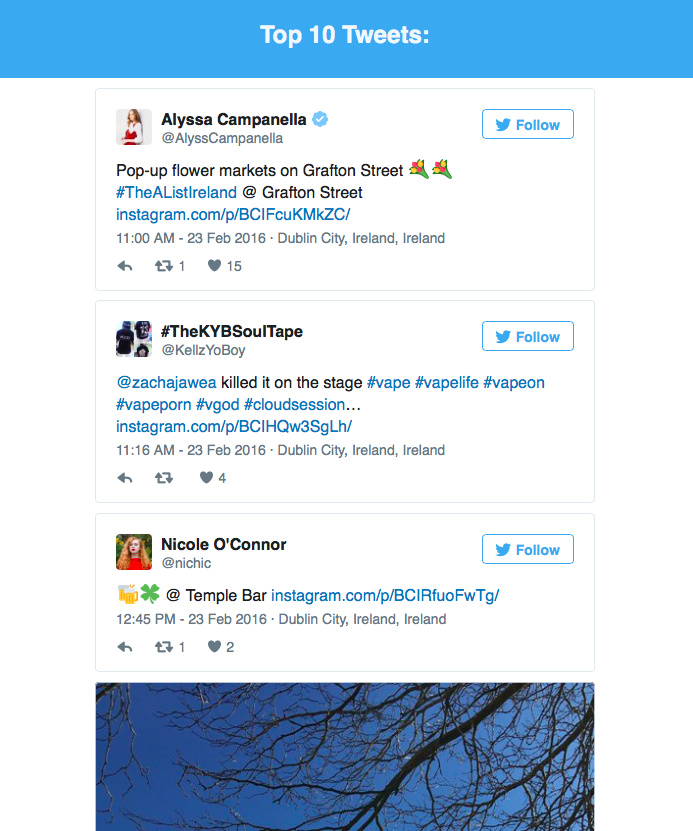
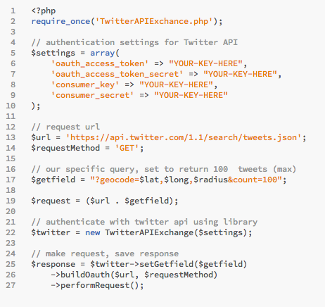

Geo Tweets
23 February, 2016
Created by Patrick O'Boyle / @Patrick_OBoyle
Geo Tweets
- Takes a latitude, longitude, and radius
- Finds recent tweets from the area
- Displays 10 most favourited tweets, ordered
Screenshot
Twitter API
- Search API is very powerful & easy to use
- Maximum tweets returned: 100 (defaults to 15)
- Lots of parameters, location, language, time period, contains certain words
API Libraries
Twitter Endorsed Libs- I used TwitterAPIExchange, a PHP library
- Allows you to authenicate and make requests very simply, letting you focus on what you're doing
- Tradeoff: If the API updates, libs need changes to support new features / changed features
Example setup:
Searching, Sorting & Displaying Tweets
- PHP data passed to JavaScript for processing
- All tweets are sorted by favourite count, and the top 10 are kept
- Room for improvement: Stop sorting once 10 top are formed
- The top 10 tweets are then iterated over, converted to DOM elements, and added to the page
- Twitter supply a useful script (widget.js) to style tweets you're displaying